9 Data Visualization with R
9.1 Introduction to Data Visualization
Data visualization is the graphical representation of information and data. In sport business analytics, effective visualizations transform complex datasets into clear, actionable insights that drive decision-making.
9.1.1 Why Visualize Data?
- Pattern Recognition: Humans process visual information faster than tables of numbers
- Communication: Visualizations make complex data accessible to stakeholders
- Decision Making: Clear visuals support faster, more confident decisions
- Storytelling: Charts and graphs tell compelling stories with data
- Exploration: Visualizations reveal patterns, trends, and outliers
9.1.2 Principles of Effective Visualization
Before creating visualizations, consider these fundamental principles:
1. Clarity: Make your message immediately obvious 2. Accuracy: Represent data truthfully without distortion 3. Efficiency: Maximize information with minimal ink 4. Aesthetics: Create visually appealing, professional graphics 5. Context: Provide appropriate labels, titles, and legends
9.1.3 Common Visualization Pitfalls to Avoid
# Example data
team_wins <- data.frame(
team = c("Team A", "Team B", "Team C", "Team D"),
wins = c(45, 50, 48, 52)
)
# BAD: Truncated y-axis (exaggerates differences)
bad_plot <- ggplot(team_wins, aes(x = team, y = wins)) +
geom_bar(stat = "identity", fill = "steelblue") +
coord_cartesian(ylim = c(40, 55)) +
labs(title = "BAD: Truncated Y-axis",
subtitle = "Makes small differences appear large") +
theme_minimal()
# GOOD: Full y-axis (honest representation)
good_plot <- ggplot(team_wins, aes(x = team, y = wins)) +
geom_bar(stat = "identity", fill = "steelblue") +
labs(title = "GOOD: Full Y-axis",
subtitle = "Honest representation of differences") +
theme_minimal()
# Display side by side
gridExtra::grid.arrange(bad_plot, good_plot, ncol = 2)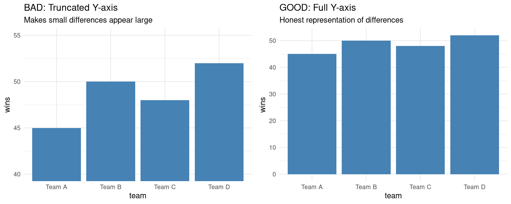
9.2 Introduction to ggplot2
ggplot2 is R’s most powerful and popular data visualization package. It’s based on the “Grammar of Graphics,” which provides a systematic approach to creating visualizations.
9.2.1 The Grammar of Graphics
Every ggplot2 visualization is built from three essential components:
- Data: The dataset you want to visualize
- Aesthetics (aes): How variables map to visual properties (x, y, color, size, etc.)
- Geometries (geom): The type of plot (points, lines, bars, etc.)
# Basic ggplot2 structure
# ggplot(data = <DATA>, aes(x = <X_VAR>, y = <Y_VAR>)) +
# geom_<TYPE>()
# Simple example
data(Teams)
# Filter recent MLB data
recent_teams <- Teams %>%
filter(yearID == 2021)
# Create a simple scatter plot
ggplot(data = recent_teams, aes(x = R, y = W)) +
geom_point() +
labs(title = "Runs Scored vs. Wins (2021 MLB Season)",
x = "Runs Scored",
y = "Wins")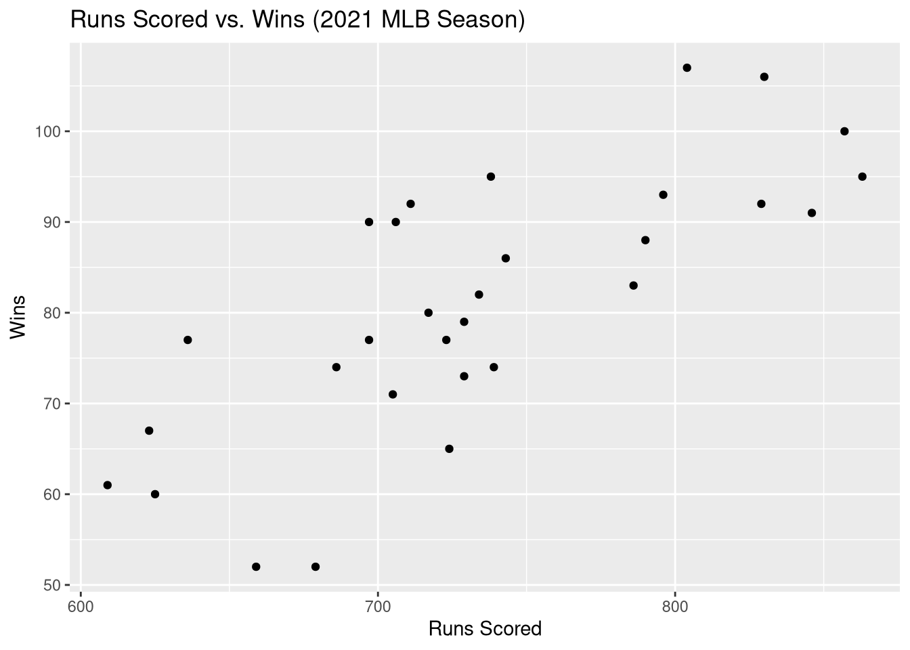
9.2.2 Building Plots Layer by Layer
ggplot2 uses a layered approach. You start with a base and add layers:
# Start with base layer
p <- ggplot(recent_teams, aes(x = R, y = W))
# Add points
p <- p + geom_point(size = 3, alpha = 0.6)
# Add regression line
p <- p + geom_smooth(method = "lm", se = TRUE, color = "red")
# Add labels
p <- p + labs(
title = "Relationship Between Runs and Wins",
subtitle = "2021 MLB Season",
x = "Runs Scored",
y = "Wins",
caption = "Data: Lahman Baseball Database"
)
# Add theme
p <- p + theme_minimal()
# Display
print(p)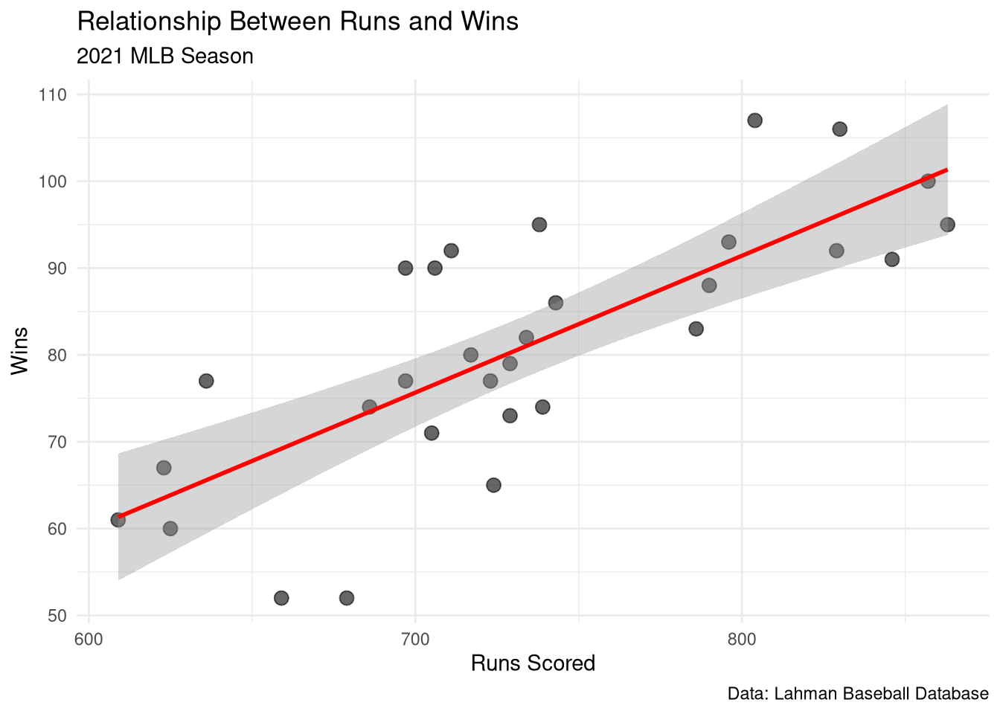
9.3 Essential Plot Types for Sport Analytics
9.3.1 Scatter Plots
Use case: Show relationships between two continuous variables
# Basic scatter plot
scatter1 <- ggplot(recent_teams, aes(x = RA, y = W)) +
geom_point(size = 3, alpha = 0.6, color = "darkblue") +
labs(title = "Runs Allowed vs. Wins",
x = "Runs Allowed",
y = "Wins") +
theme_minimal()
# Scatter plot with color grouping
scatter2 <- ggplot(recent_teams, aes(x = R, y = W, color = lgID)) +
geom_point(size = 3, alpha = 0.7) +
labs(title = "Runs vs. Wins by League",
x = "Runs Scored",
y = "Wins",
color = "League") +
theme_minimal()
gridExtra::grid.arrange(scatter1, scatter2, ncol = 2)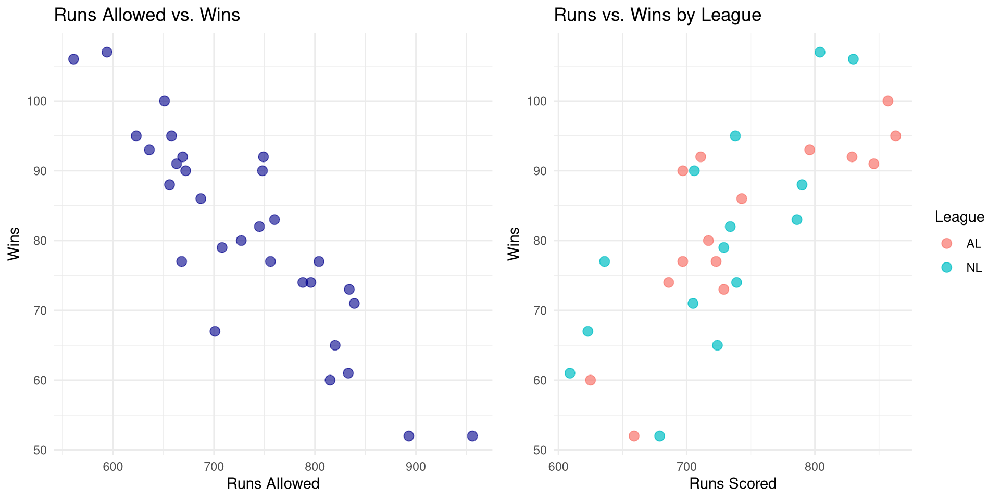
9.3.2 Bar Charts
Use case: Compare quantities across categories
# Prepare data: Top 10 teams by wins in 2021
top_teams <- recent_teams %>%
arrange(desc(W)) %>%
head(10) %>%
mutate(team_name = paste(name, yearID))
# Basic bar chart
ggplot(top_teams, aes(x = reorder(name, W), y = W)) +
geom_bar(stat = "identity", fill = "steelblue") +
coord_flip() + # Horizontal bars for readability
labs(title = "Top 10 MLB Teams by Wins (2021)",
x = "Team",
y = "Wins") +
theme_minimal()
# Grouped bar chart comparing wins and losses
team_records <- top_teams %>%
select(name, W, L) %>%
pivot_longer(cols = c(W, L), names_to = "outcome", values_to = "count")
ggplot(team_records, aes(x = reorder(name, -count), y = count, fill = outcome)) +
geom_bar(stat = "identity", position = "dodge") +
scale_fill_manual(values = c("W" = "darkgreen", "L" = "darkred"),
labels = c("Wins", "Losses")) +
coord_flip() +
labs(title = "Win-Loss Records: Top 10 Teams (2021)",
x = "Team",
y = "Games",
fill = "Outcome") +
theme_minimal()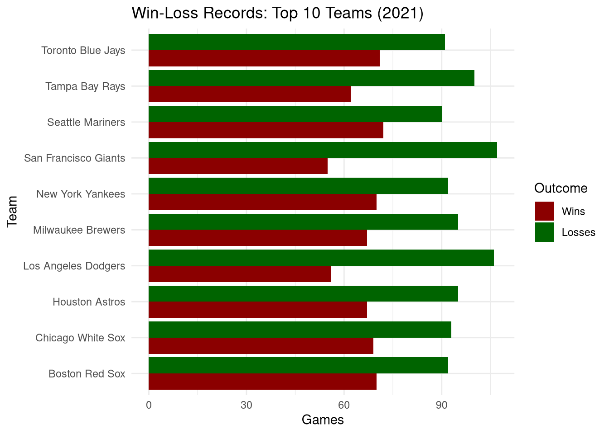
9.3.3 Line Charts
Use case: Show trends over time
# Prepare time series data: Yankees performance over time
yankees_history <- Teams %>%
filter(teamID == "NYA", yearID >= 1990) %>%
select(yearID, W, L, R, RA)
# Single line chart
ggplot(yankees_history, aes(x = yearID, y = W)) +
geom_line(color = "navy", size = 1.2) +
geom_point(color = "navy", size = 2) +
labs(title = "New York Yankees: Wins Over Time",
x = "Year",
y = "Wins") +
theme_minimal()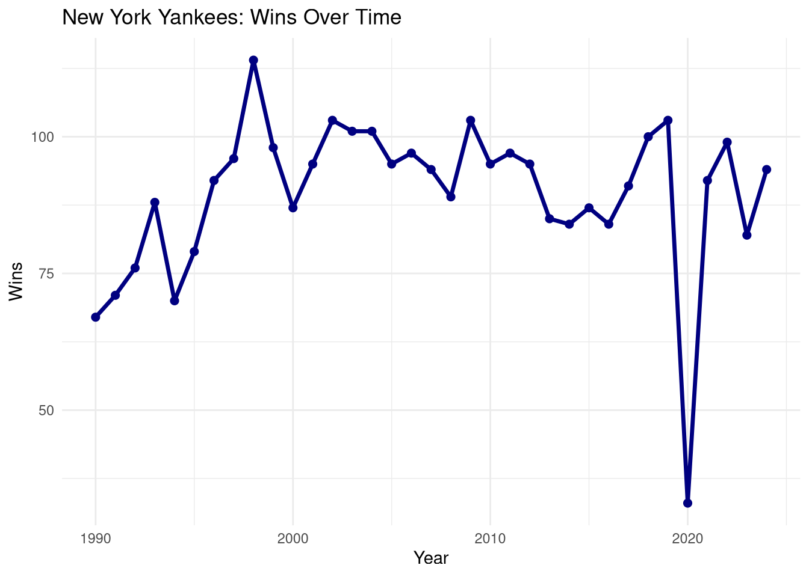
# Multiple lines: Compare runs scored vs. runs allowed
yankees_runs <- yankees_history %>%
select(yearID, R, RA) %>%
pivot_longer(cols = c(R, RA), names_to = "metric", values_to = "runs")
ggplot(yankees_runs, aes(x = yearID, y = runs, color = metric, linetype = metric)) +
geom_line(size = 1.2) +
geom_point(size = 2) +
scale_color_manual(values = c("R" = "darkgreen", "RA" = "darkred"),
labels = c("Runs Scored", "Runs Allowed")) +
scale_linetype_manual(values = c("R" = "solid", "RA" = "dashed"),
labels = c("Runs Scored", "Runs Allowed")) +
labs(title = "Yankees: Runs Scored vs. Runs Allowed (1990-2021)",
x = "Year",
y = "Runs",
color = "Metric",
linetype = "Metric") +
theme_minimal()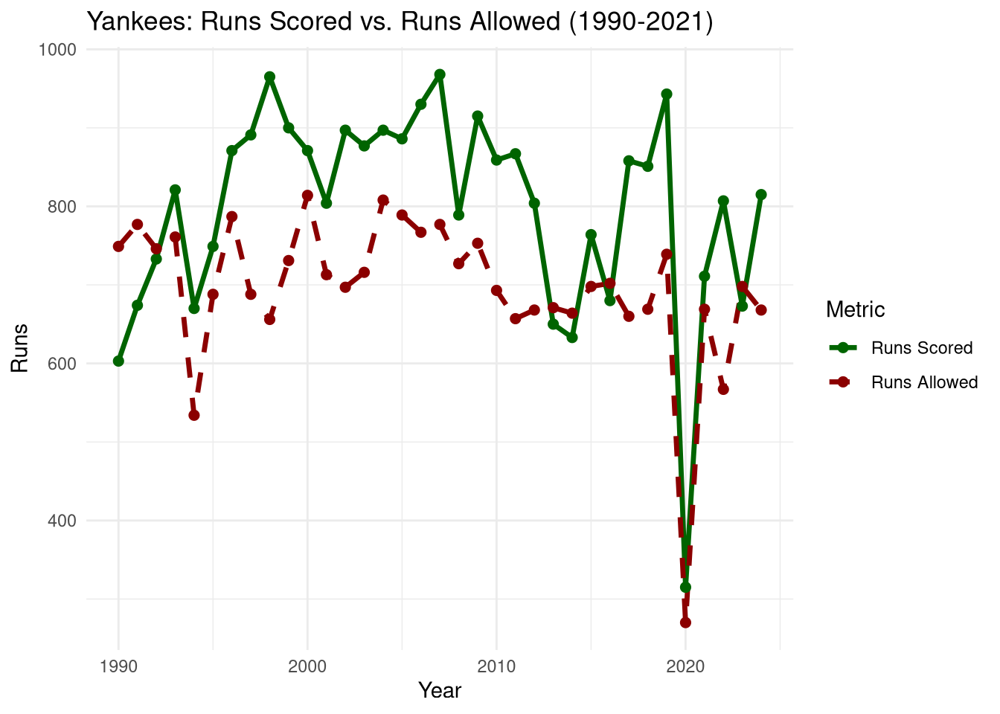
9.3.4 Histograms
Use case: Show distribution of a single continuous variable
# Basic histogram
hist1 <- ggplot(recent_teams, aes(x = W)) +
geom_histogram(binwidth = 5, fill = "steelblue", color = "white") +
labs(title = "Distribution of Wins (2021)",
x = "Wins",
y = "Number of Teams") +
theme_minimal()
# Histogram with density overlay
hist2 <- ggplot(recent_teams, aes(x = W)) +
geom_histogram(aes(y = ..density..), binwidth = 5,
fill = "steelblue", color = "white", alpha = 0.7) +
geom_density(color = "darkred", size = 1.2) +
labs(title = "Distribution with Density Curve",
x = "Wins",
y = "Density") +
theme_minimal()
gridExtra::grid.arrange(hist1, hist2, ncol = 2)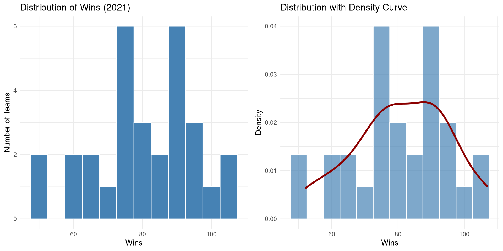
9.3.5 Box Plots
Use case: Compare distributions across groups, identify outliers
# Prepare data: Multiple years
teams_multi_year <- Teams %>%
filter(yearID >= 2016, yearID <= 2021)
# Box plot comparing leagues
ggplot(teams_multi_year, aes(x = lgID, y = W, fill = lgID)) +
geom_boxplot(alpha = 0.7) +
labs(title = "Win Distribution by League (2016-2021)",
x = "League",
y = "Wins",
fill = "League") +
theme_minimal() +
theme(legend.position = "none")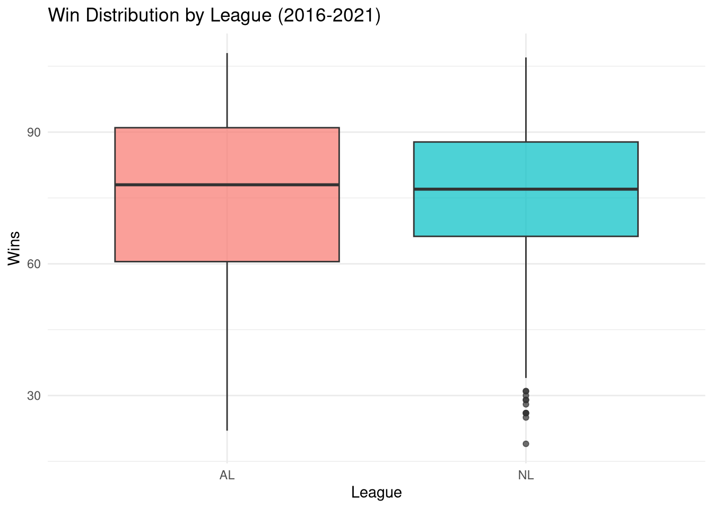
# Box plot over time
ggplot(teams_multi_year, aes(x = factor(yearID), y = W)) +
geom_boxplot(fill = "lightblue", alpha = 0.7) +
labs(title = "Win Distribution by Year (2016-2021)",
x = "Year",
y = "Wins") +
theme_minimal()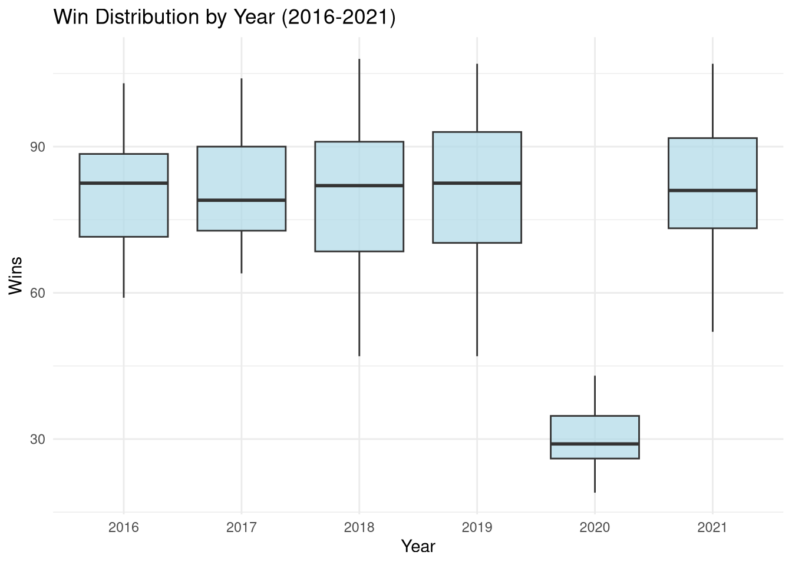
9.3.6 Violin Plots
Use case: Show full distribution shape (alternative to box plots)
ggplot(teams_multi_year, aes(x = lgID, y = R, fill = lgID)) +
geom_violin(alpha = 0.7) +
geom_boxplot(width = 0.2, fill = "white", alpha = 0.8) +
labs(title = "Runs Scored Distribution by League",
subtitle = "Violin plot with embedded box plot",
x = "League",
y = "Runs Scored") +
theme_minimal() +
theme(legend.position = "none")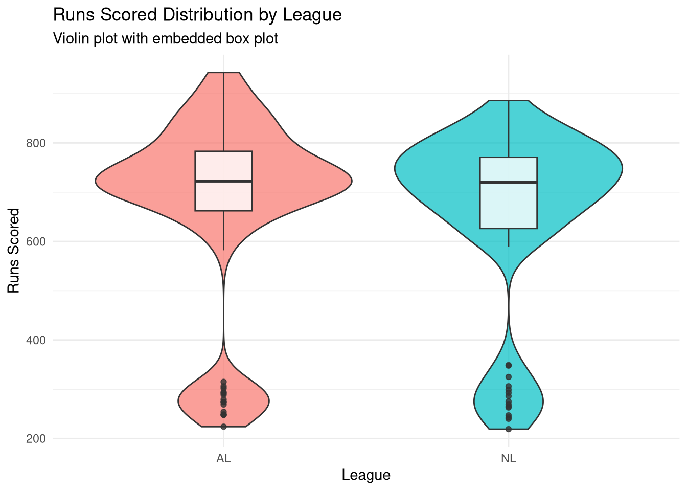
9.4 Customizing Visualizations
9.4.1 Colors and Themes
# Sample data
sample_data <- recent_teams %>%
arrange(desc(W)) %>%
head(8)
# Plot 1: Default theme
p1 <- ggplot(sample_data, aes(x = reorder(name, W), y = W)) +
geom_bar(stat = "identity", fill = "steelblue") +
coord_flip() +
labs(title = "Default Theme", x = "", y = "Wins")
# Plot 2: Minimal theme
p2 <- ggplot(sample_data, aes(x = reorder(name, W), y = W)) +
geom_bar(stat = "identity", fill = "steelblue") +
coord_flip() +
labs(title = "Minimal Theme", x = "", y = "Wins") +
theme_minimal()
# Plot 3: Classic theme
p3 <- ggplot(sample_data, aes(x = reorder(name, W), y = W)) +
geom_bar(stat = "identity", fill = "steelblue") +
coord_flip() +
labs(title = "Classic Theme", x = "", y = "Wins") +
theme_classic()
# Plot 4: Custom colors
p4 <- ggplot(sample_data, aes(x = reorder(name, W), y = W, fill = W)) +
geom_bar(stat = "identity") +
scale_fill_gradient(low = "lightblue", high = "darkblue") +
coord_flip() +
labs(title = "Custom Gradient", x = "", y = "Wins") +
theme_minimal() +
theme(legend.position = "none")
gridExtra::grid.arrange(p1, p2, p3, p4, ncol = 2)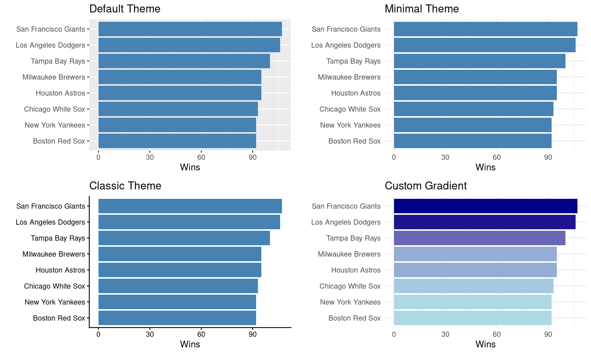
9.4.2 Custom Color Palettes for Sport Teams
# Define custom colors (example: using team-like colors)
team_colors <- c(
"Team A" = "#003087", # Blue
"Team B" = "#E31837", # Red
"Team C" = "#006BB6", # Light Blue
"Team D" = "#FDB827", # Gold
"Team E" = "#00471B" # Green
)
# Sample attendance data
attendance_data <- data.frame(
team = c("Team A", "Team B", "Team C", "Team D", "Team E"),
avg_attendance = c(35000, 28000, 42000, 31000, 26000)
)
ggplot(attendance_data, aes(x = reorder(team, avg_attendance),
y = avg_attendance, fill = team)) +
geom_bar(stat = "identity") +
scale_fill_manual(values = team_colors) +
coord_flip() +
labs(title = "Average Attendance by Team",
x = "Team",
y = "Average Attendance") +
theme_minimal() +
theme(legend.position = "none")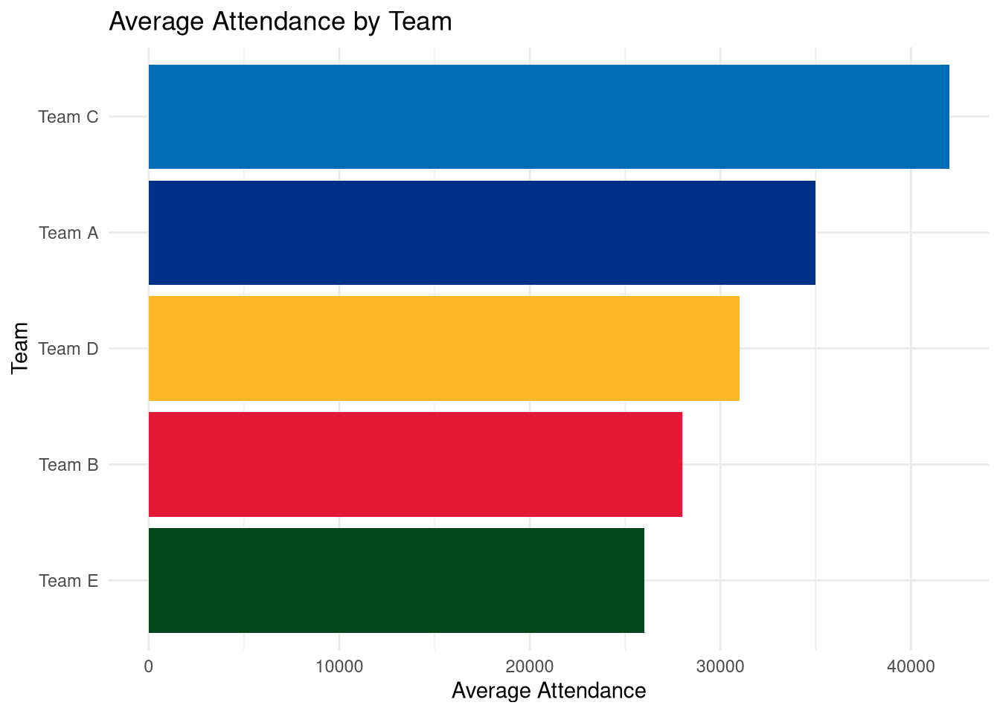
9.4.3 Annotations and Labels
# Data for demonstration
top_performers <- recent_teams %>%
arrange(desc(W)) %>%
head(5)
ggplot(top_performers, aes(x = R, y = W)) +
geom_point(size = 4, color = "darkblue") +
geom_text(aes(label = name), hjust = -0.2, vjust = 0) +
annotate("text", x = 750, y = 100,
label = "Strong positive\ncorrelation",
color = "red", size = 4) +
annotate("segment", x = 760, xend = 780, y = 98, yend = 95,
arrow = arrow(length = unit(0.3, "cm")), color = "red") +
labs(title = "Top 5 Teams: Runs vs. Wins (2021)",
x = "Runs Scored",
y = "Wins") +
theme_minimal()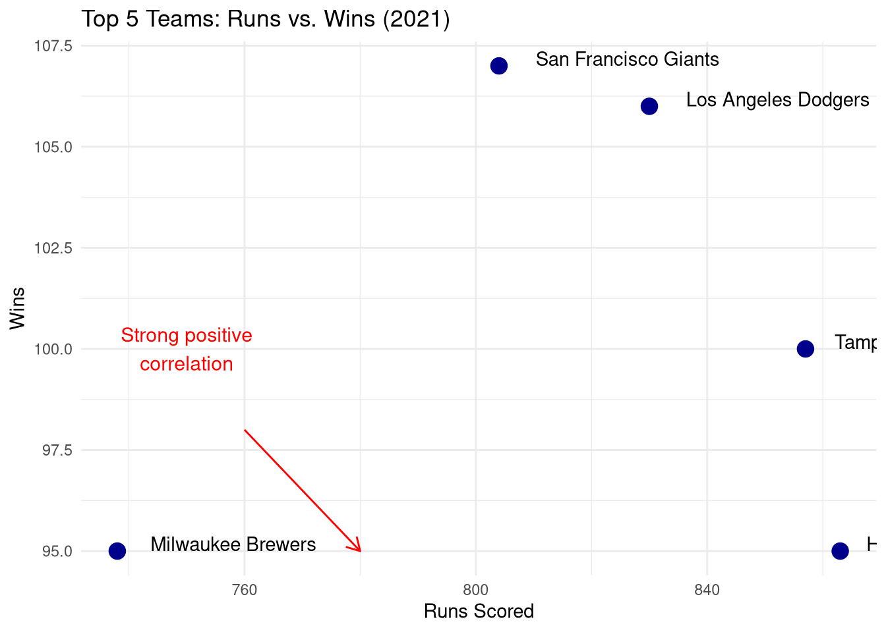
9.4.4 Faceting: Small Multiples
Faceting creates multiple plots based on categorical variables
# Compare leagues over multiple years
teams_comparison <- Teams %>%
filter(yearID >= 2018, yearID <= 2021)
# Facet by year
ggplot(teams_comparison, aes(x = R, y = W, color = lgID)) +
geom_point(alpha = 0.6, size = 2) +
geom_smooth(method = "lm", se = FALSE) +
facet_wrap(~ yearID, ncol = 2) +
labs(title = "Runs vs. Wins by Year and League",
x = "Runs Scored",
y = "Wins",
color = "League") +
theme_minimal()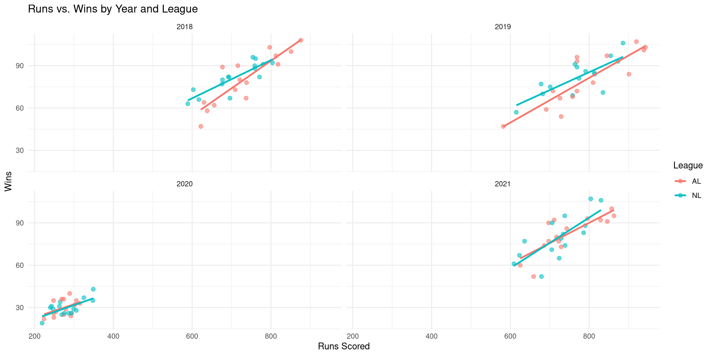
9.5 Sport Business Visualization Examples
9.5.1 Example 1: Revenue Analysis
# Simulate sport organization revenue data
set.seed(123)
revenue_data <- data.frame(
year = rep(2016:2021, each = 4),
category = rep(c("Tickets", "Merchandise", "Sponsorship", "Broadcast"), 6),
revenue = c(
45, 12, 25, 18, # 2016
48, 14, 28, 20, # 2017
52, 15, 30, 22, # 2018
55, 16, 32, 24, # 2019
25, 8, 15, 26, # 2020 (COVID impact)
50, 18, 35, 28 # 2021 (recovery)
)
)
# Stacked area chart
ggplot(revenue_data, aes(x = year, y = revenue, fill = category)) +
geom_area(alpha = 0.7) +
scale_fill_brewer(palette = "Set2") +
labs(title = "Revenue Breakdown by Category (2016-2021)",
subtitle = "Notice 2020 COVID-19 impact",
x = "Year",
y = "Revenue ($ millions)",
fill = "Category") +
theme_minimal() +
theme(legend.position = "bottom")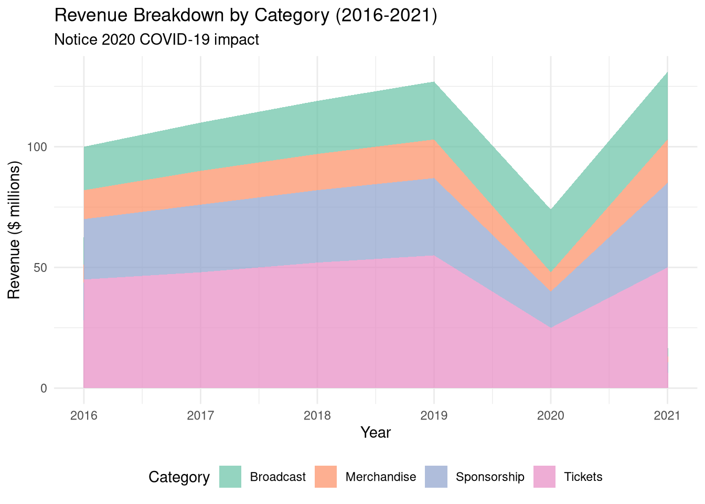
9.5.2 Example 2: Player Performance Metrics
# Load batting data
data(Batting)
# Focus on recent MVP candidates
recent_batting <- Batting %>%
filter(yearID == 2019, AB >= 500) %>%
mutate(
batting_avg = H / AB,
slugging = (H + X2B + 2*X3B + 3*HR) / AB,
obp = (H + BB + HBP) / (AB + BB + HBP + SF)
) %>%
arrange(desc(HR)) %>%
head(15)
# Bubble chart: multiple dimensions
ggplot(recent_batting, aes(x = batting_avg, y = HR, size = RBI, color = obp)) +
geom_point(alpha = 0.6) +
scale_size_continuous(range = c(3, 12)) +
scale_color_gradient(low = "lightblue", high = "darkblue") +
labs(title = "Player Performance Metrics (2019)",
subtitle = "Top 15 home run hitters",
x = "Batting Average",
y = "Home Runs",
size = "RBI",
color = "OBP") +
theme_minimal()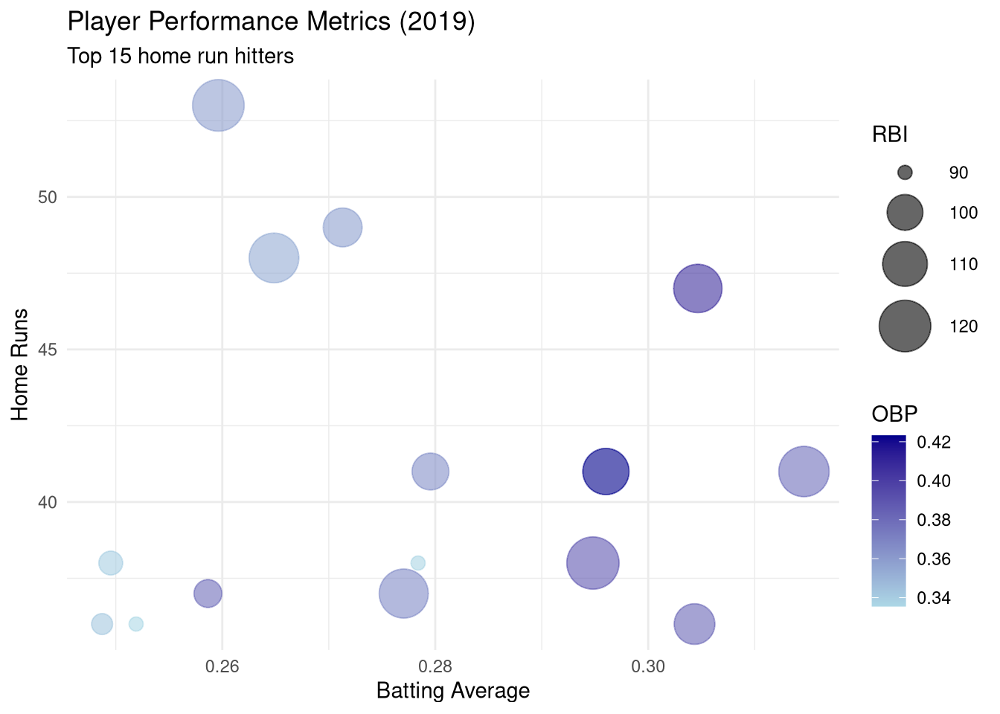
9.5.3 Example 3: Attendance Trends
# Calculate average attendance by team over time
attendance_trends <- Teams %>%
filter(yearID >= 2010, yearID <= 2019) %>%
group_by(yearID) %>%
summarize(
avg_attendance = mean(attendance, na.rm = TRUE),
total_attendance = sum(attendance, na.rm = TRUE)
)
# Create combined visualization
p1 <- ggplot(attendance_trends, aes(x = yearID, y = avg_attendance)) +
geom_line(color = "darkblue", size = 1.2) +
geom_point(color = "darkblue", size = 3) +
scale_y_continuous(labels = scales::comma) +
labs(title = "Average Team Attendance (2010-2019)",
x = "Year",
y = "Average Attendance per Team") +
theme_minimal()
p2 <- ggplot(attendance_trends, aes(x = yearID, y = total_attendance)) +
geom_bar(stat = "identity", fill = "steelblue", alpha = 0.7) +
scale_y_continuous(labels = scales::comma) +
labs(title = "Total League Attendance (2010-2019)",
x = "Year",
y = "Total Attendance") +
theme_minimal()
gridExtra::grid.arrange(p1, p2, ncol = 2)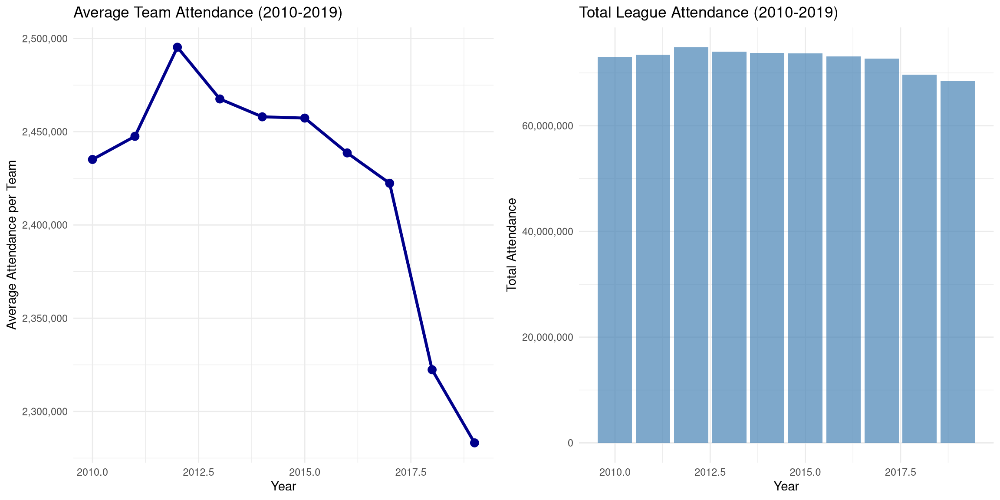
9.5.4 Example 4: Comparative Performance Dashboard
# Create multi-panel dashboard
teams_2021 <- Teams %>%
filter(yearID == 2021) %>%
mutate(
run_differential = R - RA,
win_pct = W / (W + L)
)
# Panel 1: Wins vs Run Differential
panel1 <- ggplot(teams_2021, aes(x = run_differential, y = W)) +
geom_point(aes(color = lgID), size = 3, alpha = 0.7) +
geom_smooth(method = "lm", se = FALSE, color = "black", linetype = "dashed") +
labs(title = "A. Run Differential vs. Wins",
x = "Run Differential",
y = "Wins") +
theme_minimal() +
theme(legend.position = "none")
# Panel 2: Home Runs Distribution
panel2 <- ggplot(teams_2021, aes(x = HR)) +
geom_histogram(binwidth = 20, fill = "steelblue", color = "white") +
labs(title = "B. Distribution of Home Runs",
x = "Home Runs",
y = "Number of Teams") +
theme_minimal()
# Panel 3: League Comparison
panel3 <- ggplot(teams_2021, aes(x = lgID, y = win_pct, fill = lgID)) +
geom_boxplot(alpha = 0.7) +
labs(title = "C. Win Percentage by League",
x = "League",
y = "Win Percentage") +
theme_minimal() +
theme(legend.position = "none")
# Panel 4: Offensive vs Defensive Performance
panel4 <- ggplot(teams_2021, aes(x = R, y = RA, color = win_pct)) +
geom_point(size = 3, alpha = 0.7) +
scale_color_gradient(low = "red", high = "darkgreen") +
labs(title = "D. Offensive vs. Defensive Performance",
x = "Runs Scored",
y = "Runs Allowed",
color = "Win %") +
theme_minimal()
# Combine into dashboard
gridExtra::grid.arrange(panel1, panel2, panel3, panel4, ncol = 2)
9.6 Exporting and Sharing Visualizations
9.6.1 Saving Plots
# Create a plot
my_plot <- ggplot(recent_teams, aes(x = R, y = W)) +
geom_point(size = 3, color = "darkblue") +
geom_smooth(method = "lm", se = TRUE, color = "red") +
labs(title = "Runs vs. Wins (2021)",
x = "Runs Scored",
y = "Wins") +
theme_minimal()
# Save as PNG (for web/presentations)
ggsave("runs_vs_wins.png", plot = my_plot,
width = 8, height = 6, dpi = 300)
# Save as PDF (for print/reports)
ggsave("runs_vs_wins.pdf", plot = my_plot,
width = 8, height = 6)
# Save as high-resolution image
ggsave("runs_vs_wins_highres.png", plot = my_plot,
width = 10, height = 8, dpi = 600)9.6.2 Creating Publication-Ready Plots
# Example of a polished, publication-ready plot
publication_plot <- ggplot(recent_teams, aes(x = R, y = W)) +
geom_point(size = 4, alpha = 0.6, color = "navy") +
geom_smooth(method = "lm", se = TRUE, color = "darkred", fill = "pink", alpha = 0.3) +
labs(
title = "The Relationship Between Runs Scored and Team Wins",
subtitle = "2021 Major League Baseball Season (N = 30 teams)",
x = "Runs Scored",
y = "Number of Wins",
caption = "Data source: Lahman Baseball Database\nAnalysis: Sport Business Analytics (2024)"
) +
theme_minimal(base_size = 12) +
theme(
plot.title = element_text(face = "bold", size = 14),
plot.subtitle = element_text(size = 11, color = "gray40"),
plot.caption = element_text(size = 9, color = "gray50", hjust = 0),
axis.title = element_text(face = "bold"),
panel.grid.minor = element_blank()
)
print(publication_plot)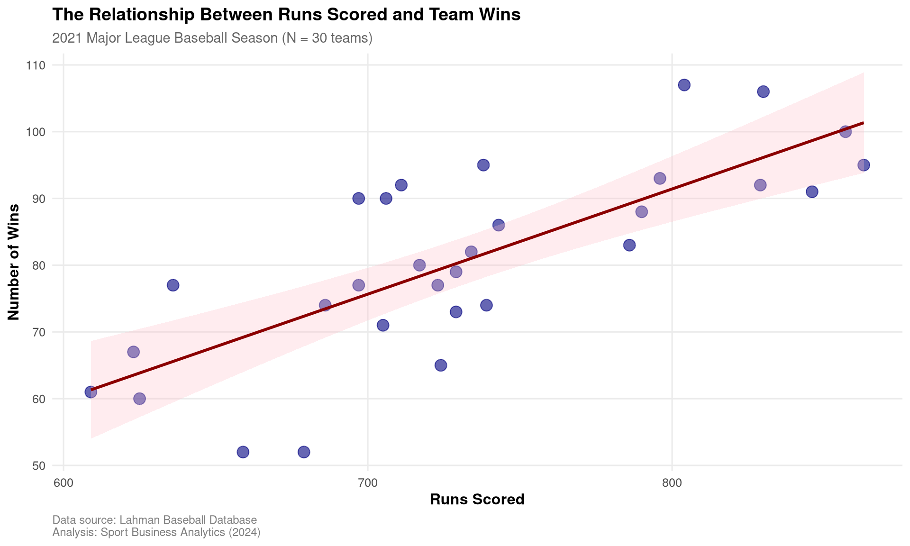
9.7 Best Practices for Sport Business Visualizations
9.7.1 1. Know Your Audience
Executive Dashboard: Simple, high-level metrics with clear trends
# Simple, clean visualization for executives
exec_data <- data.frame(
quarter = c("Q1", "Q2", "Q3", "Q4"),
revenue = c(24.5, 28.3, 32.1, 35.7),
target = c(25, 27, 30, 35)
)
ggplot(exec_data, aes(x = quarter)) +
geom_bar(aes(y = revenue), stat = "identity", fill = "steelblue", alpha = 0.8) +
geom_line(aes(y = target, group = 1), color = "red", size = 1.5, linetype = "dashed") +
geom_point(aes(y = target), color = "red", size = 4) +
labs(title = "Quarterly Revenue Performance",
subtitle = "Blue bars: Actual | Red line: Target",
x = "Quarter",
y = "Revenue ($ millions)") +
theme_minimal(base_size = 14)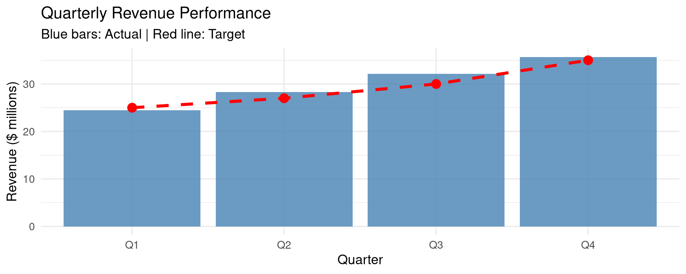
Analyst Report: Detailed, technical visualizations with annotations
# Detailed visualization for analysts
analyst_data <- recent_teams %>%
mutate(
performance = ifelse(W >= 90, "Excellent",
ifelse(W >= 80, "Good",
ifelse(W >= 70, "Average", "Poor")))
)
ggplot(analyst_data, aes(x = R, y = W, color = performance, size = HR)) +
geom_point(alpha = 0.7) +
geom_smooth(method = "lm", se = TRUE, color = "black", linetype = "dashed") +
scale_color_manual(values = c("Excellent" = "darkgreen",
"Good" = "green",
"Average" = "orange",
"Poor" = "red")) +
labs(title = "Comprehensive Performance Analysis: 2021 MLB Season",
subtitle = "Relationship between offensive production and team success",
x = "Runs Scored",
y = "Wins",
color = "Team Performance",
size = "Home Runs",
caption = "Bubble size represents home run total") +
theme_minimal()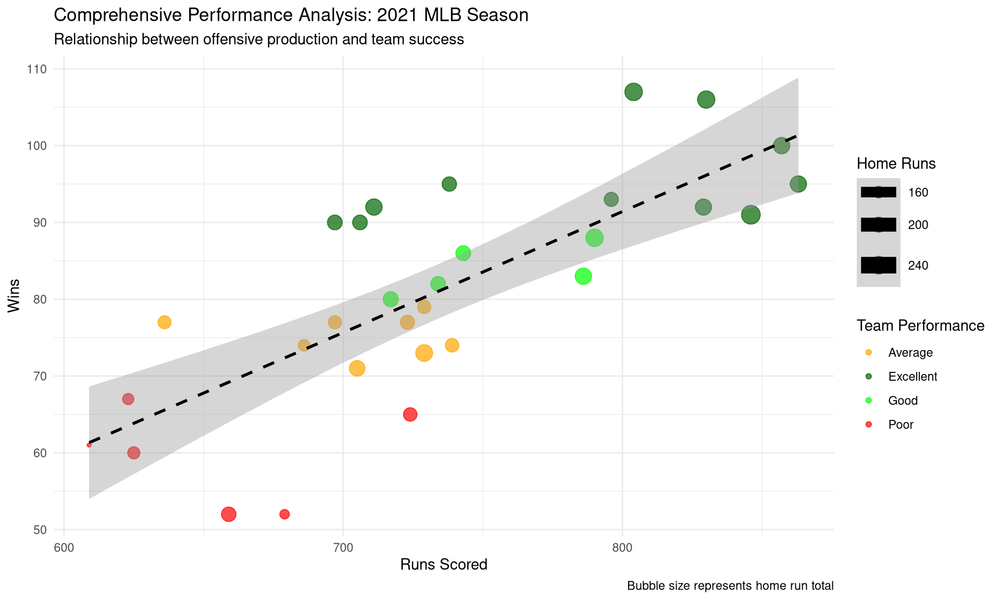
9.7.2 2. Choose the Right Chart Type
| Data Type | Visualization | Use Case |
|---|---|---|
| Comparison | Bar chart | Compare values across categories |
| Trend | Line chart | Show change over time |
| Relationship | Scatter plot | Examine correlation between variables |
| Distribution | Histogram, Box plot | Show data spread and outliers |
| Composition | Stacked bar, Pie chart | Show parts of a whole |
| Ranking | Horizontal bar | Show ordered categories |
9.7.3 3. Maintain Consistency
# Define consistent theme and colors for organization
org_theme <- theme_minimal(base_size = 11) +
theme(
plot.title = element_text(face = "bold", color = "navy"),
axis.title = element_text(face = "bold"),
legend.position = "bottom"
)
org_colors <- c("#003087", "#E31837", "#FDB827")
# Apply consistent theme across multiple plots
data1 <- recent_teams %>% arrange(desc(W)) %>% head(10)
p1 <- ggplot(data1, aes(x = reorder(name, W), y = W)) +
geom_bar(stat = "identity", fill = org_colors[1]) +
coord_flip() +
labs(title = "Top 10 Teams by Wins", x = "", y = "Wins") +
org_theme
p2 <- ggplot(data1, aes(x = reorder(name, HR), y = HR)) +
geom_bar(stat = "identity", fill = org_colors[2]) +
coord_flip() +
labs(title = "Top 10 Teams by Home Runs", x = "", y = "Home Runs") +
org_theme
p3 <- ggplot(data1, aes(x = reorder(name, attendance), y = attendance)) +
geom_bar(stat = "identity", fill = org_colors[3]) +
coord_flip() +
scale_y_continuous(labels = scales::comma) +
labs(title = "Top 10 Teams by Attendance", x = "", y = "Attendance") +
org_theme
gridExtra::grid.arrange(p1, p2, p3, ncol = 3)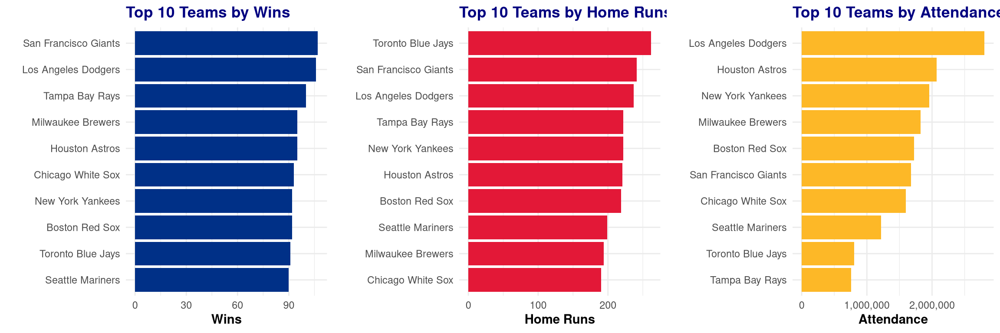
9.8 Practice Exercises
9.8.1 Exercise 1: Basic Visualizations
Create the following visualizations using the Lahman Teams dataset:
- A scatter plot showing the relationship between batting average and wins
- A histogram of team home runs for the 2020 season
- A line chart showing total MLB attendance from 2000-2019
9.8.2 Exercise 2: Customization
Take a basic plot and enhance it with:
- Custom colors
- Informative labels and title
- A theme of your choice
- Annotations highlighting key insights
9.9 Chapter Summary
9.9.1 Key Concepts
- Principles of Visualization:
- Clarity, accuracy, efficiency, aesthetics, context
- Avoid truncated axes and misleading representations
- Choose appropriate chart types for your data
- ggplot2 Grammar of Graphics:
- Data + Aesthetics + Geometries = Visualization
- Layer-by-layer construction
- Consistent syntax across plot types
- Essential Plot Types:
- Scatter plots: Relationships between continuous variables
- Bar charts: Comparisons across categories
- Line charts: Trends over time
- Histograms: Distributions
- Box plots: Comparing distributions, identifying outliers
- Customization:
- Themes for consistent appearance
- Color palettes for emphasis and branding
- Annotations for highlighting insights
- Faceting for small multiples
- Best Practices:
- Know your audience (executives vs. analysts)
- Maintain visual consistency
- Tell stories with data
- Export high-quality images for sharing
9.9.2 R Functions Reference
| Function | Purpose |
|---|---|
ggplot() |
Initialize a ggplot object |
aes() |
Define aesthetic mappings |
geom_point() |
Scatter plot |
geom_line() |
Line chart |
geom_bar() |
Bar chart |
geom_histogram() |
Histogram |
geom_boxplot() |
Box plot |
geom_smooth() |
Add trend line |
facet_wrap() |
Create small multiples |
labs() |
Add labels and titles |
theme_minimal() |
Apply minimal theme |
scale_*() |
Customize scales |
ggsave() |
Save plot to file |
9.10 References
- Wickham, H. (2016). ggplot2: Elegant Graphics for Data Analysis (2nd ed.). Springer.
- Cairo, A. (2016). The Truthful Art: Data, Charts, and Maps for Communication. New Riders.
- Tufte, E. R. (2001). The Visual Display of Quantitative Information (2nd ed.). Graphics Press.
- Wilke, C. O. (2019). Fundamentals of Data Visualization. O’Reilly Media.
- Few, S. (2012). Show Me the Numbers: Designing Tables and Graphs to Enlighten (2nd ed.). Analytics Press.